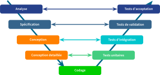
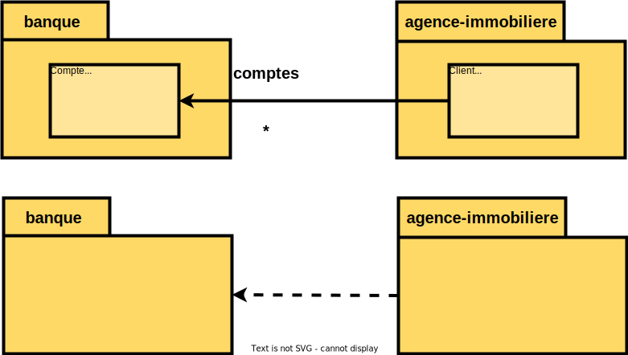
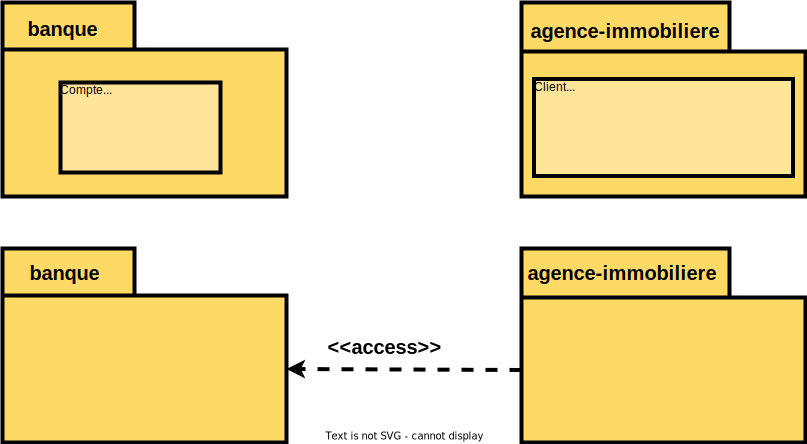
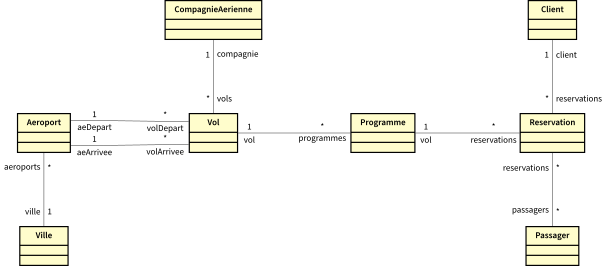
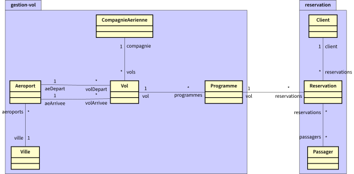

Conception Orientée Objet - COO
Diagramme UML de paquetages
2A - Bachelor Universitaire de Technologie
IUT d'Orsay - Université Paris-Saclay - 2025/2026
IUT d'Orsay - Université Paris-Saclay - 2025/2026

Cycle de développement

Ce cours se positionne dans les étapes Conception et Conception détaillée.
Exemple d'introduction

Définitions
-
Un paquetage regroupe des éléments de la modélisation appelés membres,
portant sur
un sous-ensemble du système. -
Le découpage en paquetage doit traduire un découpage logique
du système correspondant
à des espaces de nommage homogènes. -
Un paquetage permet de grouper n'importe quelle élément de modélisation d'UML
dans des éléments de plus haut niveau.
- cas d'utilisation, objets, classes, composants, ..., et d'autres paquetages.
Présentation d'un paquetage

Nom d'un paquetage
- Chaque paquetage doit avoir un nom différent.
- Un paquetage définit un espace de nommage (name space).
-
Les membres d'un paquetage appartiennent au paquetage englobant:
- deux éléments dans deux paquetages peuvent porter le même nom.
- deux éléments dans le même paquetage doivent porter des noms différents.
Nom d'un paquetage
Exemple

Nom d'un élément

-
Le nom d'un élément est simple s'il est utilisé seul.
- la classe
Roue
- la classe
-
Le nom d'un élément est complet s'il est précédé par
les noms des paquetages englobants (name space).- la classe
voiture::systeme-acceleration::Roue
- la classe
La visibilité

- Les éléments d'un paquetage peuvent avoir une visibilité déclarée:
- de type public (par défaut) $\to$ visible dans tout le modèle.
- de type privé (
private ) $\to$ non visible à l'extérieur du paquetage.
Relation de dépendances
- Une relation de dépendance entre deux paquetages existe dès que
deux éléments de modélisation issus de deux paquetages sont associés.
- hormis les cas de dépendances implicites (emboîtement de paquetages)
- La dépendance est une relation unidirectionnelle entre paquetages.
- une modification de la cible peut impliquer une modification de la source
- Une relation de dépendance se représente par une flèche en pointillé.
Relation de dépendances
Exemple

Importation de paquetage
- Pour utiliser des éléments de modélisation définis dans un autre paquetage,
on peut utiliser la relation d'importation.- permet d'importer l'espace de nommage d'un autre paquetage.
-
Les éléments de modélisation du paquetage importé deviennent accessible
à tous les memebres du paquetage réalisant l'importation.- référençable sans utiliser explicitement le nom du paquetage importé.
Importation de paquetage
Exemple 1

Importation de paquetage
Exemple 2

Le paquetage C a accès aux classes C1 ,C3 et C4 .
Accès à un paquetage
- Il est possible d'accéder aux éléments de modélisation d'un paquetage à partir d'un autre
paquetage en utilisant le nom complet de l'élément.
- utilisation de l'espace de nommage d'un autre paquetage
-
L'accès à un élément d'un autre espace de nommage n'est pas une importation
et ne peut être transmis à d'autres paquetages par transitivité.
Accès à un paquetage
Exemple 1

Accès à un paquetage
Exemple 2

Le paquetage C a accès à la classe C4 seulement.
La cohérence et l'indépendance
- Le découpage en paquetages doit traduire un découpage logique
du système
à construire (des espaces de nommage homogènes) - La structuration d'un modèle dans un diagramme de paquetages
s'appuie
sur deux principes fondamentaux :- la cohérence $\to$ regrouper les éléments proches sémantiquement.
- l'indépendance $\to$ minimiser les dépendances entre les paquetages.
Le principe de cohérence
La cohérence consiste à regrouper les éléments
proches d'un point de vue sémantique en suivant les critères suivants:
- finalité $\to$ les classes doivent rendre des services de même nature.
- évolution $\to$ les classes stables doivent être isolées de celles qui vont évoluer
(les classes métiers et les classes applicatives). - cycle de vie des objets $\to$ les classes doivent être distinguées selon que leurs objets ont une durée de vie identique ou pas.
Quel découpage ?

Avantager la finalité

Avantager l'évolution

Un découpage qui avantage
l'indépendance
Est ce qu'on peut faire mieux que le résultat obtenu à partir
des découpages précédents ?
des découpages précédents ?
Réduction de couplage

- Les associations qui traversent deux paquetages peuvent induire
des dépendances mutuelles, si elles sont bidirectionnelles. -
Le concepteur doit réduire les dépendances mutuelles,
afin
d'augmenter la modularité et l'évolutivité de son application.
Privilégier un sens de navigation

On fait un choix en privilégiant un sens
de navigation afin d'éliminer
une des deux dépendances
"il est certain qu'une réservation est en relation forte avec
le vol
concerné, alors que le vol existe par lui-même, indépendamment
de toute réservation"
Inverser une dépendance
L'inversion d'une dépendance s'effectue, en introduisant une classe
abstraite
(ou une interface), de la façon suivante :


Inverser une dépendance
Exemple